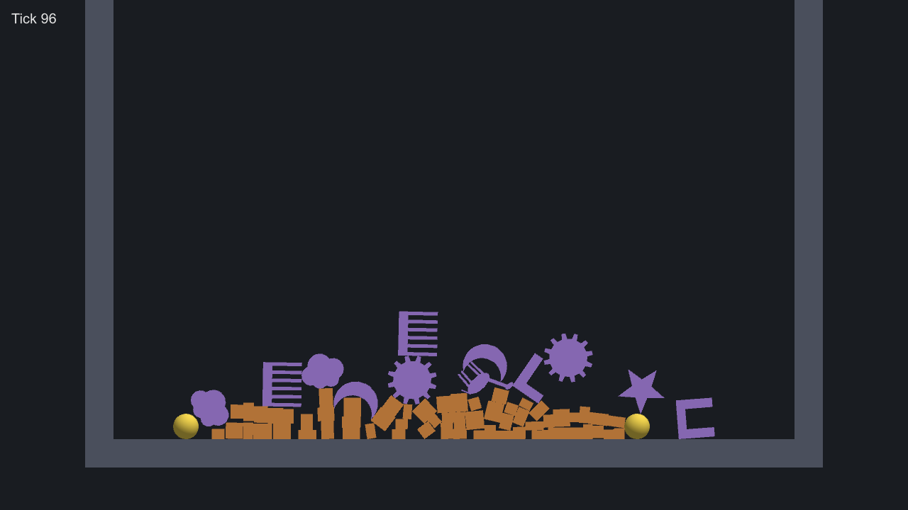
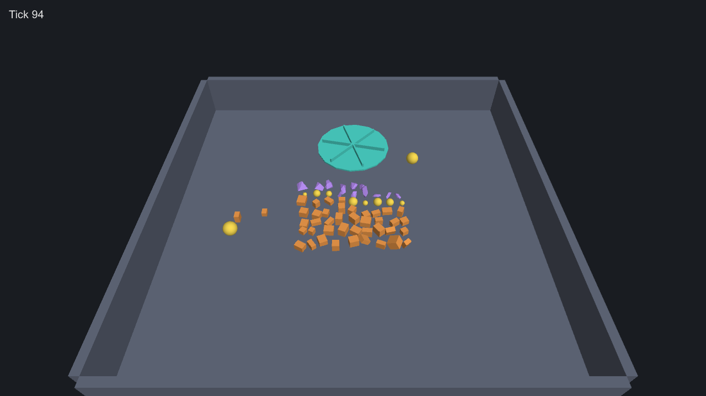

クイックスタート
サンプルを開いて、1 台の PC の中で 2 人 → PC と Android の 2 台、の順に動かします。Asset Store の Unity のパッケージを使う時は、Unity から読んでください。2 台は同じ Wi-Fi（LAN）につなぐか、自分のサーバーに置いたリレーのルームコードでつなぎます（8. トランスポートとルームコード）。
| エンジン | 1 台の中の 2 人 | PC と Android の 2 台 |
|---|---|---|
| Unity | 積み上げ（ターン制）・押し合い（リアルタイム、動くステージも）のサンプル | 同じサンプルで対戦 |
| Godot | Unity と同じ 2 つのサンプル（積み上げ・押し合い、動くステージも） | 同じサンプルで対戦。Unity のサンプルともつながる |
| Unreal | 押し合い（リアルタイム、動くステージも）のサンプルのマップ（セッションを直に使うものと、マッチコンポーネントで組んだもの）・3D の押し合い（回る台）のマップ・積み上げと押し合いのヘッドレスの対戦 | PC どうし（LAN か、自前のリレーのルームコード）で対戦。Unity・Godot のサンプルともつながる。Android は UE 5.8 で |
Unity と Godot のサンプルの画面の文字は英語が既定です（メニューの Language / 言語か起動の引数 lang=ja で日本語。OS の言語では変わりません）。下ではボタンの名前を英語で書き、日本語の表示を（）に添えます。Unreal のサンプルの表示は英語です（相手と設定が違う時の文だけ、起動の引数 lang=ja で日本語になります）。
コード例
上の帯で選んだエンジンの書き方を出します。どのエンジンでも、入力は整数にしてから渡し、両方の端末で設定・ルール・形（同じ順）をそろえます。
ワールドを進めてハッシュを比べる
using DetPhys;
using var world = new DetPhysWorld(DetPhysWorldSettings.Default);
var chain = DetPhysHashChain.Start;
// 100 tick 進めて、毎 tick のハッシュを鎖にまとめる
for (int i = 0; i < 100; i++)
{
world.Step();
chain = chain.Add(world.Hash);
}
// 相手と比べるのはこの値（両方で同じになる）
Debug.Log($"tick {world.Tick} hash {DetPhysHash.ToHex(world.Hash)}");var world := DetPhysWorld.create(DetPhysWorldSettings.new())
# 100 tick 進めて、毎 tick のハッシュを鎖にまとめる
var chain := world.step_chain(100, DetPhys.chain_begin())
# 相手と比べるのはこの値（両方で同じになる）
print(world.get_tick(), " ", world.get_hash_hex())using DetPhys;
using var world = new DetPhysWorld(DetPhysWorldSettings.Default);
// 100 tick 進めて、毎 tick のハッシュを鎖にまとめる
ulong chain = world.StepChain(100, DetPhysHash.ChainBegin);
// 相手と比べるのはこの値（両方で同じになる）
GD.Print(DetPhysHash.Hex(world.Hash));#include "DetPhysWorld.h"
#include "DetPhysLibrary.h"
void AMyWorldActor::BeginPlay()
{
Super::BeginPlay();
UDetPhysWorld* World = UDetPhysWorld::CreateDetPhysWorld(this, FDetPhysWorldSettings());
// 100 tick 進めて、毎 tick のハッシュを鎖にまとめる
int64 Chain = World->StepTicksWithChain(100, UDetPhysLibrary::HashChainBegin());
// 相手と比べるのはこの値（両方で同じになる）
UE_LOG(LogTemp, Log, TEXT("tick %lld hash %s chain %llx"), World->GetTick(), *World->GetStateHashHex(), Chain);
}Event BeginPlay
→ Create DetPhys World（Settings は既定のまま）
→ Step Ticks（Count 100）
→ Get State Hash Hex → Print Stringリアルタイムの対戦（組み込みの押し合い）
using DetPhys;
// 両方の端末: 同じ設定・同じルール・同じ形（同じ順）
var settings = DetPhysRtSettings.Default; // input delay 0, prediction 10
settings.sessionId = 0x16;
var push = new DetPhysPushSettings { seed = matchSeed };
var link = isHost ? DetPhysUdpLink.Connect("192.168.1.7", 47500) : DetPhysUdpLink.Listen(47500);
// 0 = ホスト（desync の時に正とする側）、1 = ゲスト
var session = DetPhysRtSession.CreatePush(settings, push, shapes, isHost ? 0 : 1, link.Endpoint);
var driver = new DetPhysRtDriver(settings.world.tickHz);
var input = new int[DetPhysPush.InputWords];
// 毎フレーム（Update）
session.Poll();
for (int k = driver.Due(DetPhysRtSession.NowUs); k > 0; k--)
{
// 入力は整数にしてから渡す
input[0] = DetPhysPush.QuantizeMove(Input.GetAxisRaw("Horizontal"));
input[1] = jump ? DetPhysPush.ButtonJump : 0;
session.Advance(input, out var frame);
}
while (session.TryGetConfirmed(out var c))
{
// 確定した tick（両方で同じハッシュ）: c.tick, c.hash
}
// 描く（予測を含む今の状態）
int n = session.World.ReadBodies(views);# 押し合い（リアルタイム）の Node
var rt := DetPhysRtMatch.new()
# 両方の端末: 同じ設定・同じルール・同じ形（同じ順）
rt.shape_files = shape_files
rt.rules = DetPhysPushRules.new()
add_child(rt)
# 入力は整数にしてから渡す
rt.input_source = func(tick: int) -> PackedInt32Array:
var move := DetPhysRtMatch.quantize_move(Input.get_axis("left", "right"))
var jump := 1 if Input.is_action_pressed("jump") else 0
return PackedInt32Array([move, jump])
# 確定した tick（両方で同じハッシュ）
rt.tick_confirmed.connect(func(tick, hash, flags): print(tick, " ", DetPhys.hash_hex(hash)))
# 0 = ホスト（desync の時に正とする側）、1 = ゲスト
rt.start(0, DetPhysLink.udp_connect("192.168.1.7", 47500))using DetPhys;
using Godot;
// 両方の端末: 同じ設定・同じルール・同じ形（同じ順）
var push = DetPhysPush.Desc(seed: matchSeed);
var link = isHost ? DetPhysUdpLink.Connect("192.168.1.7", 47500) : DetPhysUdpLink.Listen(47500);
// 0 = ホスト（desync の時に正とする側）、1 = ゲスト
var session = DetPhysRtSession.CreatePush(push, isHost ? 0 : 1, shapes, link.Transport, link);
var input = new int[DetPhysPush.InputWords];
ulong nextUs = DetPhysTurnSession.NowUs;
// 毎フレーム（_Process）
ulong now = DetPhysTurnSession.NowUs;
session.PollAt(now);
// 60 Hz の時計が 1 tick 進むごとに 1 回（遅れても 1 フレーム 3 回まで）
for (int k = 0; k < 3 && now >= nextUs; k++, nextUs += 1_000_000 / 60)
{
// 入力は整数にしてから渡す
input[0] = Mathf.Clamp(Mathf.RoundToInt(Input.GetAxis("left", "right") * 100f), -100, 100);
input[1] = Input.IsActionPressed("jump") ? 1 : 0;
session.AdvanceAt(now, input);
}
while (session.TryGetConfirmed(out var c))
{
// 確定した tick（両方で同じハッシュ）: c.tick, c.hash
}#include "DetPhysMatchComponents.h"
#include "DetPhysLibrary.h"
#include "DetPhysLink.h"
// ヘッダー: UPROPERTY() TObjectPtr<UDetPhysRtMatchComponent> Match;
// UFUNCTION() void HandleTick(int64 Tick, int64 Hash, int32 Flags);
AMyMatchActor::AMyMatchActor()
{
Match = CreateDefaultSubobject<UDetPhysRtMatchComponent>(TEXT("Match"));
}
void AMyMatchActor::BeginPlay()
{
Super::BeginPlay();
// 両方の端末: 同じ設定・同じルール・同じ形（同じ順）
Match->Settings.SessionId = 0x16;
Match->Rules.Seed = MatchSeed;
Match->ShapeFiles = ShapeFiles;
// 入力は整数にしてから渡す
Match->InputSource = [this](int64 InTick, TArray<int32>& Out)
{
Out = UDetPhysLibrary::MakePushInput(UDetPhysLibrary::QuantizeMove(MoveAxis), bJump, bDash);
};
Match->OnTickConfirmed.AddDynamic(this, &AMyMatchActor::HandleTick);
// 0 = ホスト（desync の時に正とする側）、1 = ゲスト
Match->StartWithLink(0, UDetPhysLink::UdpConnect(this, TEXT("192.168.1.7"), 47500));
}
// 確定した tick（両方で同じハッシュ）
void AMyMatchActor::HandleTick(int64 Tick, int64 Hash, int32 Flags)
{
UE_LOG(LogTemp, Log, TEXT("tick %lld hash %llx"), Tick, Hash);
}Actor に DetPhys Rt Match コンポーネントを足す（Details で Settings・Rules・Shape Files を両方で同じに）
Event BeginPlay
→ Udp Connect（Address 192.168.1.7, Port 47500）→ Start With Link（Local Peer 0, Link）
Event Tick
→ Make Push Input（Quantize Move（左右の軸）, Jump, Dash）→ Set Local Input
On Tick Confirmed（Tick, Hash, Flags）→ Print String- 待つ側は
Listen（Godot はudp_listen、Unreal はUdp Listen）、つなぐ側は相手の IP にConnectします。PC をつなぐ側にすると、Windows のファイアウォールの許可が要りません。 - どちらがホスト（0）かは、どちらが待つかとは別に決められます。
Unity
要るもの: Windows の Unity 2022.3 LTS 以降（2022.3.62f3 と 6000.3.28f1 で確認）。macOS 用のライブラリはパッケージに入っていますが、Unity の Mac のエディタ・プレイヤーではまだ試していません。Android も試すなら Unity Hub でそのバージョンに Android Build Support を、iOS なら iOS Build Support を入れておきます。2022.3 で APK を作る時は、Unity の設定（Preferences > External Tools）の「JDK Installed with Unity」を ON にしておきます。
パッケージを取り込む
- Package Manager（Window > Package Manager）の My Assets で DetPhys を選び、Download → Import。.unitypackage のファイルがある時は Assets > Import Package > Custom Package で取り込みます。
- DetPhys は
Packages/に入ります（Project ウィンドウでは Packages > DetPhys）。dev. petaf. detphys Assetsには何も増えませんが、それで正常です。 - ゲームの起動時に
DetPhysCore.を 1 回呼ぶと、ネイティブのライブラリが無い・古い時に分かりやすいエラーになります。EnsureCompatible()
サンプルを取り込む
- Package Manager で In Project を選び、DetPhys の Samples を開いて、DetPhys Samples の Import を押します。
- サンプルは
Assets/に入ります。サンプルは組み込みのレンダーパイプライン向けです。Samples/ DetPhys/ 1. 0. 0/ DetPhys Samples/
サンプルを選ぶメニュー（4 つのサンプルをまとめて）
Assets/を開いて Play。積み上げ対戦・押し合い・動くステージの押し合い・歯車アリーナ・3D の押し合いから選びます（最初の 4 つは Godot のサンプルのメニューと同じ並び）。Samples/ DetPhys/ 1. 0. 0/ DetPhys Samples/ Scenes/ SampleMenu. unity - どのサンプルでも、右上の「← Samples」（← サンプルの一覧）・Esc・Android の戻るボタンで、セッションとトランスポートを閉じてメニューへ戻ります（試合の途中でも確かめずに戻ります）。メニューで Android の戻るボタンを押すとアプリを終えます。
- サンプルごとのシーンも同じ
Scenesフォルダにあります（StackVersus・PushVersus・GearArena・Push3D）。直接開いた時は、右上はそのサンプルの「Menu」（設定の画面へ）です。 - 文字の大きさは画面の短い辺を 720 として決まります（720x1280・1280x720・1920x1080・Android の縦横で同じ見え方）。
1 台の中で 2 人: 積み上げ対戦（ターン制）
- メニューで積み上げ対戦を選び、「Two players on this device (loopback)」（この端末で 2 人）。
- 操作: マウスで位置・ホイールか Q / E で向き・クリックかスペースで落とす。落とした人の負けです。次に落とす形はコアのルールが seed で決めます（画面の上に「今の形・次の形」）。
1 台の中で 2 人: 押し合い（リアルタイム、入力遅延 0）
- メニューで押し合い（か動くステージの押し合い）を選び、「Two players on this device」（この端末で 2 人）。P0 は A D で移動・W でジャンプ・S でダッシュ、P1 は ← → ↑ ↓。ゲームパッド（左スティック・A でジャンプ・X / B でダッシュ）とタッチも使えます。
- メニューの「Moving」（動くステージ）で、回る歯車・往復する足場・上下する U を足せます（2 台の時は両方で同じものを選びます）。
- ルールはコアの組み込みの押し合い（
DetPhysRtSession.）です。同じルールを C# で書いたものがサンプルの中にあり（CreatePush PushVersus/）、ルールを自分で書く時の例になります。ビルドしたプレイヤーでは起動の引数Runtime/ CSharpPushRule. cs rule=csharpでこちらに替えられます（結果は同じで、互いにつながります）。
3D の押し合い（Box3D・リアルタイム、入力遅延 0）
- メニューで「3D の押し合い」を選びます（または
Scenes/を開く）。Push3D. unity - 「この端末で 2 人」で、P1 は WASD で移動・Space で跳ぶ・Shift で突進・E で箱を落とす、P2 は矢印・右 Ctrl・右 Shift・Enter。タッチは左側のドラッグと右下のボタンです。
- 「回る台」（既定 ON）で、回る凹形状の台（16 角の凸包の円盤＋低い壁 3 枚、tick の関数で動くキネマティック）が z = +7 m に出ます。乗った物を運びます。2 台の時は両方で同じにします。
- 2 台: 「同じネットワークで待つ（P1・ホスト）」/「同じネットワークでつなぐ（P2・ゲスト）」（ポートの既定 47800）・「ルームを作る / ルームに入る（リレー）」・EOS のルーム。PC をつなぐ側にするとファイアウォールの許可が要りません。
- 画面の左上に、確定 tick のハッシュのランプ・ロールバックの深さ・相手・「わざとずらす（1 ULP）」（desync デバッガーの報告が下に出て、自動で再同期する）。
- ルールはサンプルの中の C#（
DetPhysRtRule3D）で書いてあり、コアの組み込みの 3D の押し合い（detphys_）と同じ結果になります。Godot の「3D の押し合い」ともつながります。rt_ create_ push3d
PC と Android の 2 台
- シーンをビルドに入れます: File > Build Settings（Unity 6 は File > Build Profiles）で、取り込んだサンプルの
Scenes/を最初に、続けて同じフォルダのSampleMenu. unity StackVersus・PushVersus・GearArena・Push3Dを足します。 - プラットフォームを Android に切り替え、Player Settings で Scripting Backend を IL2CPP、Target Architectures の ARM64 にチェックを入れ、Minimum API Level を Android 8.0（API レベル 26）以上にします。APK を作って入れます（USB でつないだ端末なら Build And Run で入ります）。
- Android: アプリを開き、PC と同じサンプルを選び、「Wait」（待つ）・「Guest (P1)」（ゲスト）→ 始める。画面に出る「This device」（この端末の IP）を見ます。歯車アリーナと 3D の押し合いは、待つ側がホストです。Android で「ホスト（P1・待ち受け）」（歯車アリーナ）か「同じネットワークで待つ（P1・ホスト）」（3D の押し合い）、PC で「ゲスト（P2・つなぐ）」か「同じネットワークでつなぐ（P2・ゲスト）」を選びます。
- PC: エディタで Play（または同じシーンで作った Windows のプレイヤー）→ 同じサンプルを選び、「Connect」（つなぐ）・「Peer IP」に Android の IP・「Host (P0)」（ホスト）→ 始める。
- PC を「つなぐ」側にすると、Windows のファイアウォールの許可が要りません（返事は、PC から送った相手からの受信として通ります）。
- どちらがホスト（desync の時に正とする側）かは、どちらが待つかとは別に選べます。
- ポートの既定は積み上げ 47200・押し合い 47500・歯車アリーナ 47700・3D の押し合い 47800（両方で同じに）。
- 押し合いでは、テスト用に「Test: delay ms」（遅れ、例
30:60）と「loss ‰」（取りこぼし）を入れられます（自分が送るパケットに入れます。両方に同じ値を）。入れても確定した結果は変わりません。 - 同じネットワークにいない時は、片方でルームを作り、もう片方で 6 桁のルームコードを入れて入ります。EOS P2P（EOS P2P。EOS の SDK は Epic から入手）か、自前のリレー（8. トランスポートとルームコード。ソースはパッケージの
Tools~/）を使います。detphys_ relay
自分のシーンに対戦を置く
- GameObject に DetPhys Rt Match 3D（2D は DetPhys Rt Match、ターン制は DetPhys Turn Match / DetPhys Turn Match 3D）を足します。
- インスペクターで
Rule（Built In= コアの組み込みのルール、C Sharp= 自分のルール〔コードでRuleかRuleFactory〕）・Push（ルールの設定）・Connection（Local= この端末で 2 人・Udp・Relay〔ルームコード〕・Eos）を選びます。ルールの設定・形・Session Idは両方のプレイヤーで同じにします。 - 毎フレームの入力は
InputSource（(peer, tick) → 整数）かLocalInputで渡します。Play するとStartで始まり、Updateで tick の時計に合わせて進み、ロールバックし、Viewsの設定でボディを Transform に写します（Create Viewsで簡単な見た目も作ります）。 - 起きたことは UnityEvent で受け取れます:
onConnected・onRoomCode（ホストが相手に伝えるコード）・onTickConfirmed（両方のプレイヤーで同じハッシュ）・onDesync/onDesyncReport（desync デバッガーの報告）・onPeerLost・onError・onMatchEnded。ターン制はonLocalTurnでSubmitし、onTurnFinished・onMatchOverで結果を受け取ります。 - 自分の凹形状を使う時は、Window > DetPhys > Shape Baker（または画像を右クリック > DetPhys > Open in Shape Baker）を開き、透過のあるテクスチャかスプライトを選んで、プレビューを確かめてから Save します。マッチコンポーネントを付けた GameObject を選び、窓の Add to the Shapes of … を押すと、その順に mesh 0, 1, … として使われます（両方のプレイヤーで同じ並びにします）。ベイクのしくみは 3. コンセプト にあります。
- サンプルの「押し合い」と「3D の押し合い」は、起動の引数
driver=componentで、同じ対戦をコンポーネントだけで組んだものになります（例-detphys "game=push3d,driver=component,local=1"。相手はコンポーネントでない同じサンプルでもかまいません）。


Create Views の見た目: Material が空の時は、パッケージの既定の material（シェーダー DetPhys/）を使います。シーンにライトが無くても陰が付き、組み込みのレンダーパイプライン・URP・HDRP のどれでも、Android などのビルドでもそのまま表示されます。色は Color By Shape がオンの時、ボディの種類と形で分かれます（静的 = 灰・キネマティック = 青緑・箱 = 橙・球 / 円 = 黄・カプセル = 緑・凸包 / ベイクした形 = 紫）。自分の見た目にしたい時は、Views の Material に material を渡します。全部の見た目にその material が 1 つ使われます。URP なら Universal Render Pipeline/、HDRP なら HDRP/Lit などの material を作って渡します。ビルドに入るように、material はシーンから参照するか Resources に置きます。ボディごとに見た目を変えたい時は、Bodies にボディの番号順の Transform（自分のモデル）を渡します。
using DetPhys;
// DetPhys Rt Match 3D を付けた GameObject（Rule: Built In、Connection: Udp / Relay / Eos / Local）
var match = GetComponent<DetPhysRtMatch3D>();
// 入力は整数にしてから渡す（スティックとボタンを量子化）
match.InputSource = (peer, tick) => DetPhysPush3D.Input(
DetPhysRtMatch3D.QuantizeAxis(Input.GetAxisRaw("Horizontal")),
DetPhysRtMatch3D.QuantizeAxis(Input.GetAxisRaw("Vertical")),
jump ? DetPhysPush3D.ButtonJump : 0);
match.onRoomCode.AddListener(code => Debug.Log("Room code: " + code));
match.onTickConfirmed.AddListener((tick, hash, flags) =>
{
// 両方のプレイヤーで同じハッシュ
});
match.onDesyncReport.AddListener(report => Debug.LogWarning(report));- 使い方の短い例（ワールド・セッション・自分のルール・EOS）はパッケージの
README.md（Packages/）にあります。サンプルのスクリプトはdev. petaf. detphys/ README. md Assets/の下です。Samples/ DetPhys/ 1. 0. 0/ DetPhys Samples/
iOS に書き出す
- 要るもの: Unity の iOS Build Support。Player Settings の Target minimum iOS Version は 15.0 以上にします。iOS は IL2CPP・実機（arm64）だけです（シミュレーター用には書き出せません）。
- パッケージに iOS のライブラリ（
Runtime/）が入っています。書き出した Xcode プロジェクトの UnityFramework に自動でリンクされるので、設定や後処理を足す必要はありません。Plugins/ iOS/ libdetphys. a - Xcode プロジェクトの書き出しは Windows でもできます。Xcode でのビルドと署名には Mac（またはクラウドの Mac を使う CI）が要ります。
- ライセンス文は Xcode プロジェクトの
Data/に入ります（アプリの中ではRaw/ DetPhys/ THIRD_ PARTY_ NOTICES. md Application.の下のstreamingAssetsPath DetPhys/）。THIRD_ PARTY_ NOTICES. md - 対象の iOS が 15.0 より古い時や、シミュレーター用に書き出す時は、書き出しの最初にコンソールに
[DetPhys]の警告が出ます。 - このバージョンでは、iOS で EOS P2P は使えません（
DetPhysEos.が false）。LAN の UDP と自前のリレーは使えます。LAN の UDP を使う時は、iOS のローカルネットワークの許可（Info.plist のIsAvailable NSLocalNetworkUsageDescription）が要ります。
Godot
要るもの: Godot 4.3〜4.8（C# も使うなら 4.4 以降（.NET）。4.7.2 .NET で確認）。
1 台の中で 2 人
- Godot で
engines/を開きます（最初の取り込みで Godot が落ちたら、開き直します）。godot/ DetPhysSample - サンプルのシーンを開いて「現在のシーンを実行」（F6）します:
- 積み上げ（ターン制）:
res://samples/ stack_ versus/ stack_ versus. tscn - 押し合い（リアルタイム、入力遅延 0）:
res://（メニューで動くステージも選べます）samples/ push_ versus/ push_ versus. tscn - 3D の押し合い（Box3D、リアルタイム、入力遅延 0、GDScript だけ）:
res://（メニューで回る台も。既定はあり）samples/ push3d/ push3d_ versus. tscn - どれも、最初のシーン（サンプルを選ぶメニュー）から選べます
- 積み上げ（ターン制）:
- メニューの「Two players on this device」（この端末で 2 人）。操作は Unity のサンプルと同じです（積み上げ = マウスで位置・ホイールか Q / E で向き・クリックかスペースで落とす。押し合い = A D で移動・W / スペースでジャンプ・S / Shift でダッシュ、P1 は矢印。タッチは左半分をドラッグ・右上でジャンプ・右下でダッシュ）。3D の押し合い = WASD / 左スティックで移動・Space でジャンプ・Shift でダッシュ・E で箱を落とす、P2 は矢印・Enter・.・/。タッチは左半分をドラッグ・右下のボタン。右上の「わざとずらす（1 ULP）」でゲストの状態を 1 ULP ずらすと、desync デバッガーの報告（desync した tick・ボディ・フィールド・ULP・原因）が下に出て、自動で再同期します。
PC と Android の 2 台（Godot どうし・Godot と Unity）
- 書き出しの設定（
export_）の Android で APK を作って入れます（arm64、Android 8.0 以上。C# の Android の書き出しは 4.7 以降）。presets. cfg - Android で「Wait (guest)」（待つ〔ゲスト〕）、PC で「Connect (host)」（つなぐ〔ホスト〕）に Android の IP を入れて始めます（PC をつなぐ側にすると、ファイアウォールの許可が要りません）。
- ポートと設定は Unity のサンプルと同じ（積み上げ 47200・押し合い 47500）なので、片方が Unity のサンプルでもつながります（押し合いの動くステージは、両方で同じものを選びます）。
- 3D の押し合い（ポート 47800）は Unity の「3D の押し合い」と同じ並び: 片方で「Host on this network」（同じネットで待つ〔P1・ホスト〕）、もう片方で相手の IP を入れて「Join on this network」（同じネットでつなぐ〔P2・ゲスト〕）。回る台は両方で同じにします。相手が Unity のサンプルでもつながります。
- 3D の押し合いは、同じルールを C# で書いたもの（
samples/のrules3d/ DetPhysSampleRules3D. cs DetPhysSamplePush3DRuleと、3D のマッチの NodeDetPhysRtMatch3D）でも回せます。起動の引数にrule=csを足すと（回る台なしの時だけ・.NET の Godot）、描画なしの自動の対戦になります。例godot --headless --path DetPhysSample -- "detphys=game=push3d;rule=cs;peer=0;connect=127.。相手が組み込みのルールのまま（Godot・Unity・Unreal の 3D の押し合いや、C ABI の0. 0. 1:47800;auto=1;quit=1" detphys_で作ったセッション）でもつながり、確定した tick のハッシュも同じです。rt_ create_ push3d - 積み上げと押し合いは、同じルールを GDScript・C# で書いたもの（
samples/rules2d）でも回せます。起動の引数にrule=gdかrule=cs（.NET の Godot）を足すと、そのルールをマッチの Node（DetPhysStackMatch・DetPhysRtMatch）に入れて始めます。メニューのボタン（この端末で 2 人・つなぐ・リレーと EOS のルーム）も同じルールで始まり、組み込みのルールのピア（Unity のサンプルも）とつながってハッシュも同じです。
確認のシーン（ハッシュの一致）
プロジェクトの最初のシーン res:// を実行（F5）すると、出力に [DetPhysGodot] <名前> <値> OK の行が並び、最後に[DetPhysGodot] RESULT pass=<数> fail=0 が出れば、この端末のコアが基準のハッシュと同じ値を出しています（Godot（.NET） なら C# の層も。.NET なしの Godot では C# の行は SKIP）。Android では、結果は logcat の [DetPhysGodot] の行に出ます。
自分のプロジェクトに入れる
addons/detphys を写すだけです（エディタのプラグインを有効にする必要はありません）。使い方はアドオンの README.md にあります。書き出したゲームにはライセンス文が自動で入ります。書き出しのデータの res://（APK では assets/）と、Windows・Linux では実行ファイルの隣の DetPhys/ です。
var rt := DetPhysRtMatch.new() # 押し合い（リアルタイム）の Node
rt.shape_files = ... # 両方のピアで同じ形を同じ順に
rt.rules = DetPhysPushRules.new() # 組み込みの押し合いの設定（整数だけ）。動くステージは rules.field = DetPhysPushRules.FIELD_ALL
add_child(rt)
rt.input_source = func(tick: int) -> PackedInt32Array:
return PackedInt32Array([DetPhysRtMatch.quantize_move(Input.get_axis("left", "right")), 1 if Input.is_action_pressed("jump") else 0])
rt.start(1, DetPhysLink.udp_listen(47500)) # 0 = ホスト、1 = ゲストiOS に書き出す
- アドオンに iOS の GDExtension（
addons/。静的なライブラリ）が入っていて、detphys/ bin/ ios/ libdetphys_ godot. xcframework detphys.のgdextension ios.arm64の行で書き出しに入ります。書き出しの設定に iOS を足すだけで使えます。 - iOS 15.0 以上（書き出しの設定の Min iOS Version を 15.0 以上に）・実機（arm64）だけです。
- Windows・Linux の Godot からも Xcode プロジェクトまでは書き出せます。Xcode でのビルドと署名には Mac（またはクラウドの Mac を使う CI）が要ります。
- C# を使うプロジェクトの iOS への書き出しは、Godot 側でまだ実験的で、macOS の Godot が要ります。DetPhys の C# の層は、このバージョンでは iOS で確かめていません。iOS では GDScript から使ってください。
- ライセンス文は書き出しのデータ（
.pck）のres://に入ります。addons/ detphys/ THIRD_ PARTY_ NOTICES. md - このバージョンでは、iOS で EOS P2P は使えません。LAN の UDP と自前のリレーは使えます。LAN の UDP を使う時は、iOS のローカルネットワークの許可（
NSLocalNetworkUsageDescription）が要ります。
デモ: 歯車アリーナ（Unity・Godot、エンジンをまたぐ）
回る凹形状の歯車の中で、凹形状の物 120 個を棒 2 本で押し合うサンプルです。Unity と Godot の両方にあり、互いに対戦できます（PC の Unity と Android の Godot でも）。画面の端に、遅れの注入のスライダー（0〜150 ms）・入力の遅延・ハッシュのランプ・ロールバックのメーター・相手のエンジン名、「わざとずらす（1 ULP）」と「凸の組を見る」があります。
- Unity: サンプルを選ぶメニューで歯車アリーナを選ぶか、取り込んだサンプルの
Scenes/を開いて Play。Godot: メニューの「Gear arena」（歯車アリーナ。C# なので .NET）。ポートは 47700。GearArena. unity - 説明・画面の項目・実測値は 歯車アリーナ。
Unreal Engine
要るもの: Unreal Engine 5.4〜5.8（自動テストは 5.8.4 で確認。プラグインのビルドは 5.4.4〜5.8.4 の全部で通ります）、Win64。
ワールドとハッシュ（1 台）
engines/を開きます（プラグインはunreal/ DetPhysSample/ DetPhysSample. uproject engines/を読みます）。unreal/ DetPhys - Tools > Session Frontend > Automation で
DetPhys.Sampleの 8 つ（Abi・Empty100・Scene600・Tower720・Net・Net3D・Rule3D・Link）を回すと、どれも基準のハッシュと一致します（Net は 1 プロセスの 2 ピアで積み上げと押し合いを回す試験、Net3D は 3D の押し合い〔回る台あり / なし・遅れと取りこぼしあり・わざとずらす〕と座標の変換・凸包の面の向きの試験、Rule3D は C++ で書いた 3D のルール〔押し合い・ターン制の積み上げ・回る台〕と 3D のマッチコンポーネントの試験、Link はルームコード・テスト用のロビーのルーム・マッチコンポーネントの試験）。 - Blueprint:
Create DetPhys World（設定は整数: tick の速さ・サブステップ・重力 mm/s²・ワーカー数）→ シミュレーションの tick ごとにStep→Get State Hashをピアの間で比べます。 - 自分のプロジェクトでは、
engines/をunreal/ DetPhys <プロジェクト>/に置いてプラグインを有効にします。C++ からは、モジュールの依存にPlugins/ DetPhys "DetPhysRuntime"（コアの C ABI を直接呼ぶなら"DetPhysCore"も）を足し、UDetPhysWorld::GetNative()でdetphys_world*を取れます。7. API リファレンス の関数（ターン制・リアルタイム・組み込みの押し合い・動く凹形状・desync デバッガー・3D）は、C++ からなら全部呼べます。対戦の API（UDetPhysLink・UDetPhysTurnSession::CreateStack・UDetPhysRtSession::CreatePushなど）は Blueprint からも呼べます（7. API リファレンス）。
サンプルを選ぶメニュー
- マップ
Content/を開いて Play します（書き出したゲームの最初のマップもこれ）。押し合い（PushVersus = C++ で書いたサンプル）・動くステージの押し合い・押し合い（コンポーネントで組んだもの = PushComponents）・3D の押し合い（Push3D）から、「この PC で 2 人」「待つ（ゲスト・ポート 47500）」「つなぐ（ホスト）」「ルームを作る（リレー）」「ルームに入る（リレー）」を選びます。相手の IP・リレー・ルームコードは右の「2 台で」のフィールドに打ちます。英語が既定で、右上の「日本語」で切り替えられます（次の起動でも残ります）。Maps/ SampleMenu - どのサンプルでも、右上の「← Samples」（← サンプルの一覧）・Esc・Android の戻るボタンで、セッションとトランスポートを閉じてメニューへ戻ります（試合の途中でも確かめずに戻ります。戻った後に同じポートでまた待ち受けられます）。メニューで Esc を押すとゲームを終えます。
- 起動の引数
-detphys="game=push|field|components|push3d;..."でメニューを飛ばしてそのサンプルが始まります（残りの引数はサンプルがそのまま読みます）。サンプルのマップを直接開いても今までどおり動きます。 - 文字の大きさは画面の短い辺を 720 として決まります（
Config/の UserInterfaceSettings: ShortestSide・720 で 1.0。1280x720・1920x1080・縦長の窓で同じ見え方）。DefaultEngine. ini
1 台の中で 2 人（押し合い・リアルタイム、入力遅延 0）
- メニューの「押し合い > この PC で 2 人」か、サンプルのマップ
Content/を開いて Play します（絵の素材は使わず、凸多角形を押し出した板で描きます）。Maps/ PushVersus - 既定はこの PC で 2 人です。P0 は A D で移動・W かスペースでジャンプ・S か Shift でダッシュ（ゲームパッドも）、P1 は矢印。
- 起動の引数
-detphys="field=all"で動くステージ（回る歯車・往復する足場・上下する U）を足せます（gear・platform・liftを+でつないで選ぶこともできます）。
PC 2 台（LAN）・Unity / Godot のサンプルと
- 待つ側（ゲスト）を
-detphys="peer=1;listen=47500"、つなぐ側（ホスト）を-detphys="peer=0;connect=<相手の IP>:47500"で起こします。ポートと設定は Unity・Godot の押し合いのサンプルと同じなので、相手が Unity・Godot のサンプルでもつながります（動くステージは両方で同じものを選びます）。 - 積み上げ（ターン制）は、絵のあるサンプルがまだ無く（予定）、ヘッドレスの対戦（コマンドレット）だけです:
UnrealEditor-Cmd DetPhysSample.（押し合いはuproject -run=DetPhysVersus -detphys="game=stack;peer=0;connect=127. 0. 0. 1:47200;auto=1" game=push。起動のキーとログの行は Unity・Godot のサンプルと同じ）。
3D の押し合い（Unity・Godot のサンプルとも）
- メニューの「3D の押し合い > この PC で 2 人」か、マップ
Content/を開いて Play します。箱・球・石（凸包）を 2 人で押し合い、奥の回る凹形状の台が乗った物を運びます（絵の素材は使わず、箱・球と、コアから読んだ凸包のメッシュで描きます）。Maps/ Push3D - P1 は WASD で移動・Space でジャンプ・Shift でダッシュ・E で箱を落とす（ゲームパッドは左スティック・A・X・B）、P2 は矢印・Enter・.・/。N で状態をわざと 1 ULP ずらすと、desync デバッガーの報告と再同期が画面に出ます。
- 2 台では、待つ側を「待つ（ホスト・ポート 47800）」か
-detphys="game=push3d;peer=0;listen=47800"、つなぐ側を「つなぐ（ゲスト）」か-detphys="game=push3d;peer=1;connect=<相手の IP>:47800"で起こします（3D の押し合いは、Unity・Godot の 3D の押し合いと同じく待つ側がホストです）。ルールは組み込みの 3D の押し合い（UDetPhysRtSession::CreatePush3D）で、設定も同じなので、相手が Unity・Godot の「3D の押し合い」でもつながり、確定した tick のハッシュも同じです。回る台は両方で同じにします（field=tableかfield=none。メニューから始めると回る台ありです）。リレーのルームも 2D と同じキー（relay=・room=。bucket の既定はdetphys-sample/）で使えます。push3d - ヘッドレスの対戦:
UnrealEditor-Cmd DetPhysSample.（起動のキーとログの行は Unity・Godot の 3D の押し合いと同じ）。uproject -run=DetPhysVersus -detphys="game=push3d;peer=0;connect=127. 0. 0. 1:47800;auto=1;field=table" rule=cpp（回る台なしの時だけ）を足すと、同じルールを C++ で書いたもの（DetPhysSampleRules3D.のh UDetPhysSamplePush3DRule、UDetPhysRtSession::Create3D）で回ります。相手は組み込みのルールのままでつながります。 - 座標: コアは y が上・メートル（右手系）、Unreal は z が上・センチメートル（左手系）です。プラグインの読み出し（
ReadTransforms3D・ReadBodies3D・GetHull3DMeshなど）は Unreal の座標に直して返すので、そのまま Actor やコンポーネントに渡せます。ルールの設定と入力（[移動 x, 移動 z, ボタン]）はコアの座標のままです（Unreal の X = コアの x、Unreal の Y = コアの z。Make Push 3D Inputが Unreal の X / Y の向きから作ります）。
ネット越し（自前のリレーとルームコード）
- どこかに自前のリレー（
detphys_relay。置き方は 8. トランスポートとルームコード）を立てます。 - ルームを作る側を
-detphys="relay=<リレーの host か IP>[:<ポート>];peer=0"で起こすと、ログと画面に 6 桁のルームコードが出ます。入る側は-detphys="relay=<同じリレー>;room=<ルームコード>"。押し合いのマップ・コマンドレット（game=stackも）の両方で使え、相手が Unity・Godot のサンプルでもつながります（bucket の既定detphys-sample/・push detphys-sample/が同じ）。stack
マッチコンポーネントで組む（Blueprint だけでも）
- サンプルのマップ
Content/は、上と同じ押し合いをMaps/ PushComponents UDetPhysRtMatchComponentと Delegate だけで組んだものです（ADetPhysRtMatchSampleActor。既定はテスト用のロビーのルームを通した、この PC の 2 人）。起動の引数は PushVersus と同じ（relay=・room=・connect=・listen=）。 - 自分の Actor（Blueprint でも）に DetPhys Rt Match（積み上げは DetPhys Stack Match）コンポーネントを足し、
Shapes（Load Shape Filesで読む）・Settings・Rulesを両方のピアで同じにします。 Host Relay Room（ルームを作る）かJoin Relay Room（ルームコードで入る）、LAN ならStart With Link（Udp Listen/Udp Connectの link）を呼びます。役が決まるとOn Room Ready、つながるとOn Connectedが来ます。- 毎フレーム
Local Inputに自分の入力（Make Push Inputなどで整数にしたもの）を入れます。確定した tick はOn Tick Confirmed（両方のピアで同じハッシュ）、積み上げはOn Local TurnでSubmit・On Turn Finishedで結果。描画はGet Sessionのボディの読み出しで。
Android
- Android（arm64-v8a、Android 8.0 以上）は UE 5.8 で使えます。プラグインに Android のライブラリが入っているので、いつもどおり Android 向けにパッケージ化します。UE 5.8.4 と Galaxy S9 で確かめました（PC と同じハッシュ、押し合いのサンプルで 60 fps）。
- このバージョンでは、Unreal の EOS P2P は Windows だけです。Android では LAN の UDP か自前のリレーを使います。
うまくいかない時
| 様子 | 見る所 |
|---|---|
| つながらない（CONNECTING のまま） | 同じ LAN か（ネット越しは自前のリレーのルームコードで）・ポートが同じか・Windows は「つなぐ」側にしたか・両方の設定（session id・ルールの設定・押し合いの動くステージ・形とその順番）が同じか。設定が違うピアどうしは、互いのメッセージを捨てます。rt バージョン 7・turn バージョン 9 のコアは、そのときどこが違うか（version・config・rule・shapes・kinematic）を知らせます（DETPHYS_・detphys_tag_info。読み方は 5. desync への対処）。サンプル（Unity・Godot・Unreal）は、違う所が分かると「相手と設定が違います（違う所: rule）。つなぐのをやめました。…」を画面に出し、接続をやめます |
| 前に作った APK とつながらない | 通信のバージョンが違うとつなぎません。両方を同じバージョンで作り直します |
| 相手が落ちた | セッションはあきらめずに待ちます（相手から 5 秒何も届かないと PEER_LOST を知らせます）。落ちた側でアプリを再起動、同じ設定でセッションを作れば続きから戻ります |
| ずれた | ずれはハッシュの照合で見つかり、ホストの状態で自動で直ります。原因を調べるのは 5. desync への対処 |